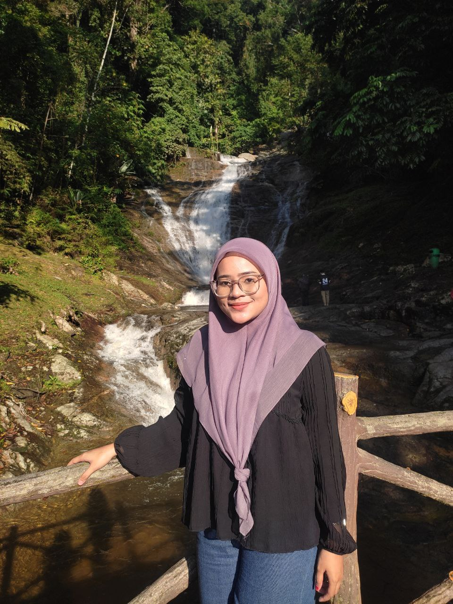
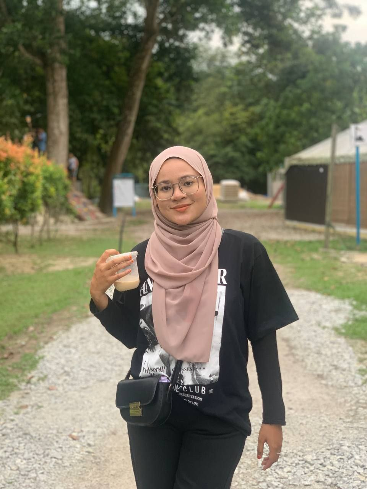
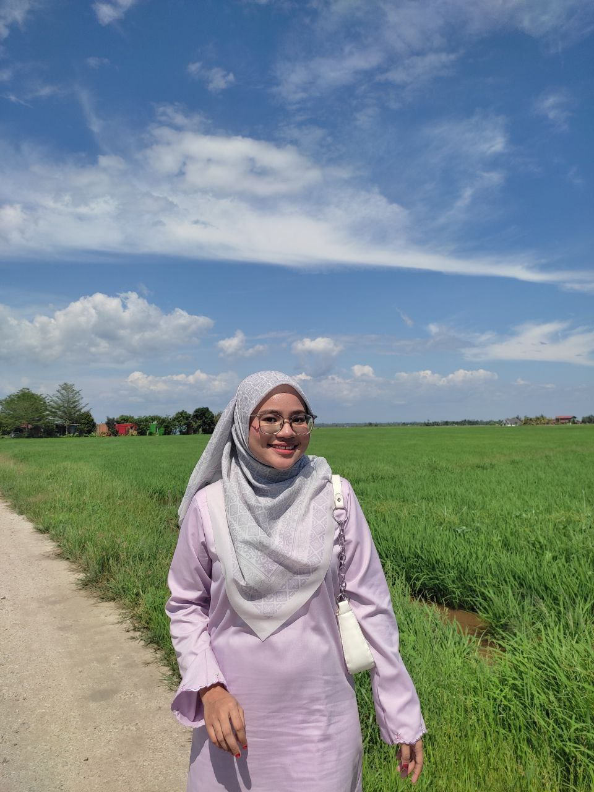
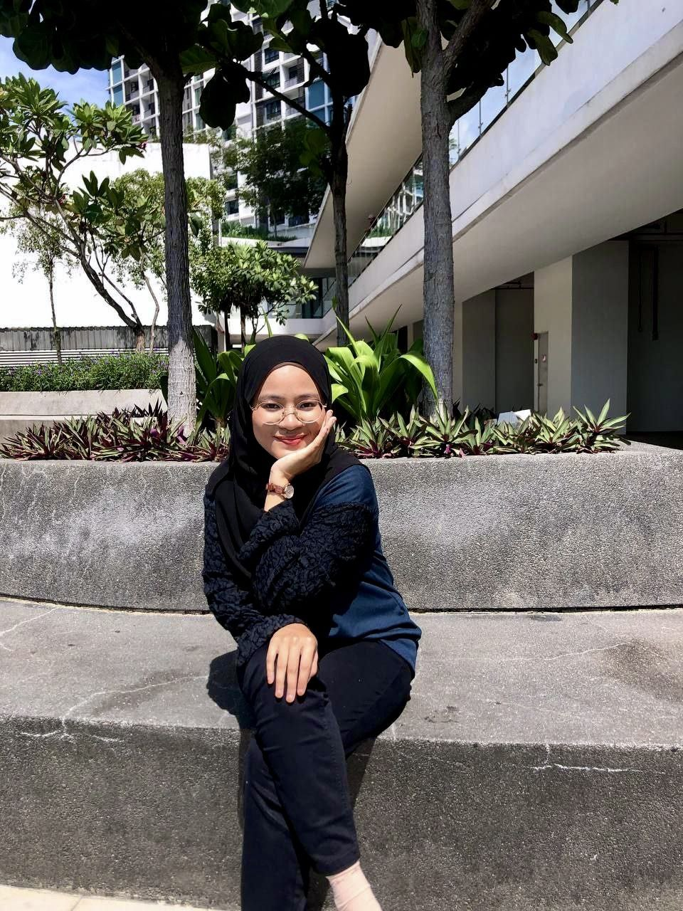

𓍢ִ໋🌷͙֒ᰔ Personal Background ⋆.˚🦋༘⋆
  
{kind=link}
{kind=link}
{kind=link}
₊ ˚ ⊹ ₊๋Short Biodata࣭ ⭑ ₊ ⊹

Full Name: Nur Syameera Binti Mohd Fauzi
Nickname: Meera or Syameera
Age: 20 years old
Status: Student
Number of Siblings: 2 (I’m the youngest)
Address: Lot 2513 A Jalan Kampung Sungai Kandis, 41000, Klang Selangor
Date of Birth: August 8, 2004
Place of Birth: Universiti Malaya Medical Centre, Kuala Lumpur
Hometown: Bagan Dato, Perak
Positive Trait: Calm, honest, good listener
Negative Trait: Quiet and easily upset
Blood Type: Type O
Hobbies: Watching movies and cooking
Favorite Foods: Tail soup and Tomyam
Favorite Drink: Teh ais
Career Dream: To become a Web Designer
Favorite Pet: Cat
Inspirational Figure: Neelofa
My Background

List of My Educational Center School
-
- PASTI AL-AMANAH
- Pusat Asuhan Tunas Islam
-
- SRA SUNGAI KANDIS
- Sekolah Rendah Agama Sungai Kandis
-
- SKTM
- Sekolah Kebangsaan Telok Menegon
-
- SMKS
- Sekolah Menengah Kebangsaan Shahbandaraya
-
- UITM REMBAU
- Universiti Teknologi MARA Campus Rembau
My Education🎓

- My educational journey began in preschool when I was 5 years old, where I learned many basic things in a joyful environment. I attended Pasti Al-Amanah, a place full of sweet memories. Here, I enjoyed every moment because I didn’t have to think about big problems. I focused on learning while playing, which made it fun to learn letters, numbers, and shapes. At that time, life was very simple because I didn’t have to worry about tests or exams. I spent more time interacting with my friends and getting to know the world outside of home, while developing my social skills. Preschool was a time full of happiness, where I started learning many important things in a relaxed and fun atmosphere.
- After completing my preschool education, I continued my studies at two different schools: SRA in the morning and SKTM in the afternoon. Although the packed schedule made me tired, the experience was valuable. At SRA, I learned religious subjects like Tauhid, Fiqh, and Akhlak, which taught me about good character and faith, while SKTM focused on academic subjects like Mathematics, Science, Bahasa Melayu, and English, where I developed an interest in logical thinking and communication. Recess time was the highlight of the day, as my friends and I would rush to the canteen for snacks, chat, and play games like "police and thief" or "tag" on the field. I was also involved in extracurricular activities that helped me build teamwork and leadership skills. Overall, despite the tiring schedule, my time at both schools provided a strong foundation for my academic and personal growth, teaching me the value of patience, perseverance, and friendship, all of which continue to guide me today.
- After completing my SPM, I was surprised that all my hard work paid off in such an amazing way. With determination and commitment, I managed to achieve 6As, a result that I am very proud of. This achievement gave me the confidence that putting in full effort would lead to positive results. In addition, I was awarded the Best Student in the subject of Home Science, which is an award I truly value. This recognition was given for my achievements in a subject I am passionate about, and it inspired me to continue striving in the fields of creativity and technology. I was called up to the stage to receive the award, a moment that meant a lot to me. All these accomplishments not only gave me personal satisfaction but also strengthened my motivation to work even harder in facing future educational challenges.
- I am currently studying at Uitm in my last semester, taking a course in CDIM110. This course gives me the opportunity to explore a field I am interested in, where I learn about technology, data management, and how information can be managed effectively to support business decisions. Additionally, this course trains me to be more analytical and creative in finding solutions to problems related to information management. With the knowledge and skills I gain, I hope to achieve my goals in the field of technology and management, while contributing to the development of the industry in the future. I also plan to continue my studies after completing my diploma by pursuing a degree in HR. I chose this course because I am thinking about my future career and my interest in learning more about HR. I believe that with the knowledge I will gain in this field, I can make a positive impact in managing human resources in organizations, while helping individuals reach their full potential.
My Favourite Pet
My favorite animal is the cat, a cute and loving creature. I once had two beloved cats named Putih and Amelda, with the name Amelda given by my late father, making it even more special. They were stray cats that I took in because they were too adorable to leave behind. I cared for them with love, and they became my loyal companions, especially when I felt sad or lonely. Sadly, their kittens didn’t survive, and in 2022, I lost Putih and Amelda due to a big flood. The loss was heartbreaking, especially because I missed Putih so much. Though they are gone, the memories of Putih and Amelda remain. They taught me the value of love, responsibility, and appreciating what you have. Their memories will always live on in my heart.Hobby of Watching Movie
I love watching horror movies because they challenge me to overcome my fear. Every time I watch these movies, I enjoy pushing myself to stay calm and appreciate the thrilling plots. I especially love stories with surprising plot twists because they keep me excited and eager to see what happens next. Some of the high-rated horror movies I’ve watched include Susuk, Sabrina, Pemandi Jenazah, and Menjelang Ajal. These movies left a deep impression on me with their unique and intense storylines.(Feel free to click on any title that interests you to explore its video trailer.)

Movie List 🎥💖
Here are some top-rated movies from different genres that I’ve watched and highly recommend. While horror films are my favorite, I do enjoy exploring other genres as well. If you’re interested in watching the full movie, simply click on the title to watch:
| Movie Title | Year | Description | Link |
|---|---|---|---|
| Top Gun: Maverick | 2023 | A thrilling continuation of the Top Gun story, where Maverick trains a new generation of pilots for a high-stakes mission. | Watch Here |
| Inception | 2010 | A mind-bending thriller about a thief who steals secrets from deep within the subconscious during dream states. | Watch Here |
| Avatar: The Way of Water | 2022 | The highly anticipated sequel to Avatar, exploring the underwater world of Pandora and the struggles of Jake and Neytiri. | Watch Here |
| Frozen | 2013 | The story of two royal sisters, Elsa and Anna, who face challenges as Elsa learns to control her magical ice powers. | Watch Here |
| Toy Story | 1995 | The story of a group of toys that come to life when humans aren't around, focusing on Woody and Buzz Lightyear's adventures. | Watch Here |
Meera's Favorite Playlist
🎵 Billie Eilish - Happier Than Ever
🎵 Ernie Zakri, Ade Govinda - Masing Masing
🎵 Insomniacks - Reminisensi
🎵 Masdo - Dinda
🎵 Noh Salleh - Rahsia Tuhan
"You are a beautiful work in progress. Every little step you take is one step closer to your dreams, and every challenge you face is an opportunity to grow. Keep going, keep smiling, and keep shining—because the world needs your light, exactly as you are."
— Unknown
Keyboard Shortcuts
Press Alt + D to go to the About Me page.
Press Alt + K to go to the My Family page.
Press Alt + R to go to the Holiday page.
Press Alt + B to go to the My Best Mate page.
Press Alt + V to go to the Video Collection page.